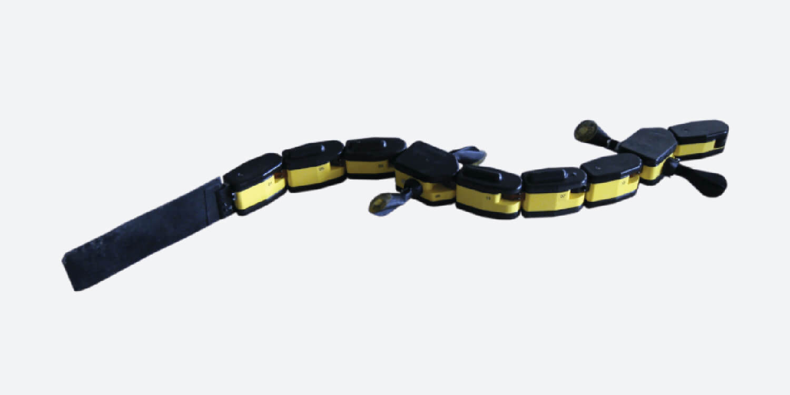

I collaborated with the BIOROB laboratory (EPFL, Switzerland) known for its groundbreaking work on central pattern generators (CPG) and neural circuits governing animal locomotion, headed by Prof. Auke Jan Ijspeert. EPFL is consistently ranked in Europe’s top 3 technical institutions. The project was part of a larger initiative to bridge the gap between neural activity and body dynamics in robotic locomotion. Our goal was to develop a model that would enable a bio-inspired salamander robot to replicate realistic swimming dynamics based on recorded electromyography (EMG) data. This work leveraged advanced musculoskeletal simulation and ML-based optimisation techniques.
The core objective of the project was to design a musculoskeletal model capable of simulating the interaction between muscle activation and body curvature in a salamander. This model was then used to drive the locomotion of a bio-inspired salamander robot—a nine-segmented, highly flexible robot capable of both walking and swimming. By applying electromyography data to the model, we aimed to create a realistic simulation of salamander movement, replicating the natural swimming gait. The model was refined through optimisation using machine learning methods (genetic algorithms in that case), ultimately allowing the salamander robot to demonstrate lifelike swimming motion in real-time.
To achieve this, we first extracted kinematic data from slow-motion X-ray images of salamanders swimming. Using this data, we developed the musculoskeletal model architecture based on prior research and the physical constraints of the robot. We then utilised the Webots simulator to optimise the model parameters, aligning them with both the recorded EMG signals and the kinematic data. The resulting model was successfully tested on the salamander robot in the lab, which demonstrated controlled and fluid swimming movement, mimicking real salamander locomotion.
This research was presented in my Master thesis and a page is still dedicated to it on the BIOROB website in a page titled: "Modeling the salamander swimming gait with virtual muscles on a robotic platform". This work received a best MSc thesis award.
This project highlights my ability to work in a world-class research environment and integrate complex computational modeling, robotics, machine learning and biomechanics into a functional solution.